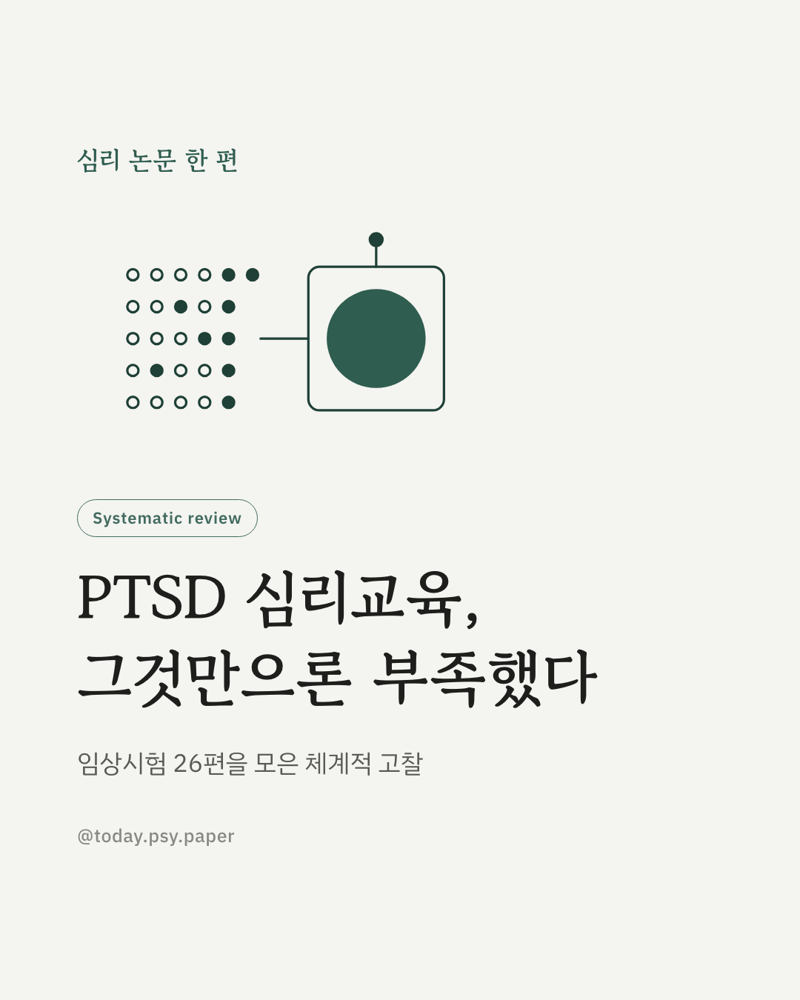
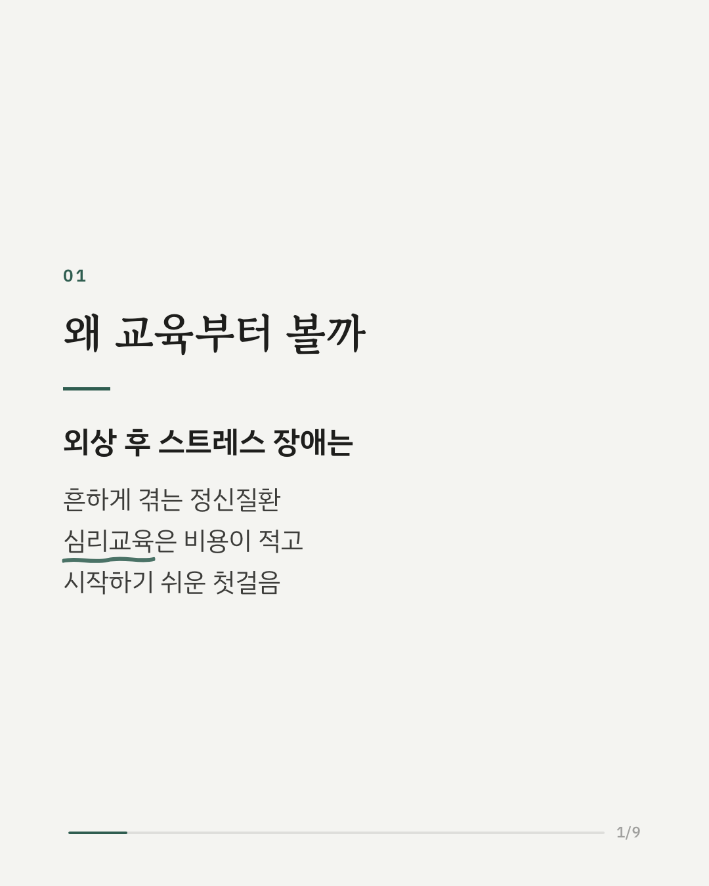
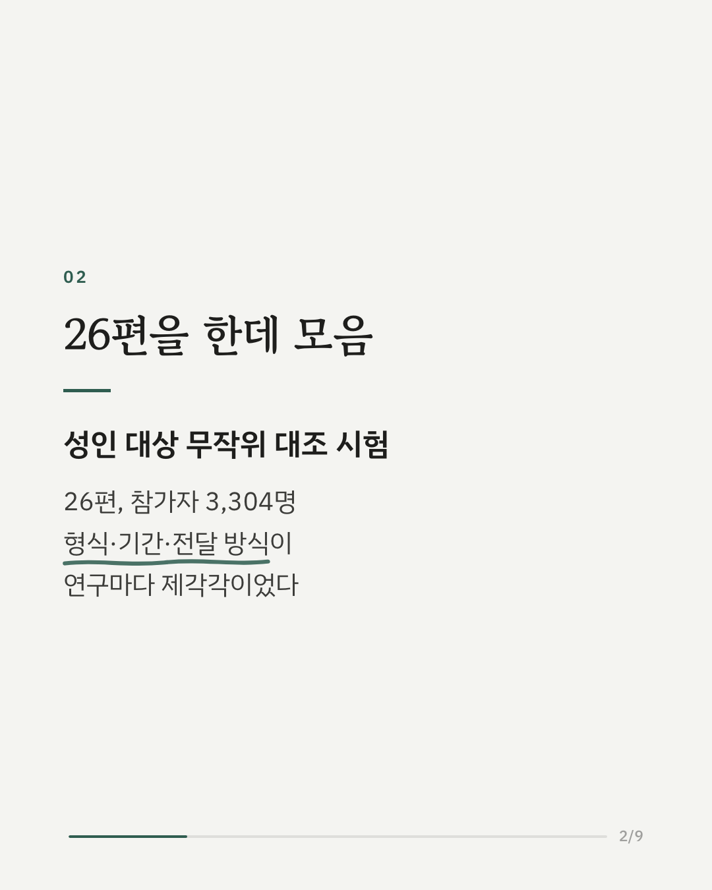
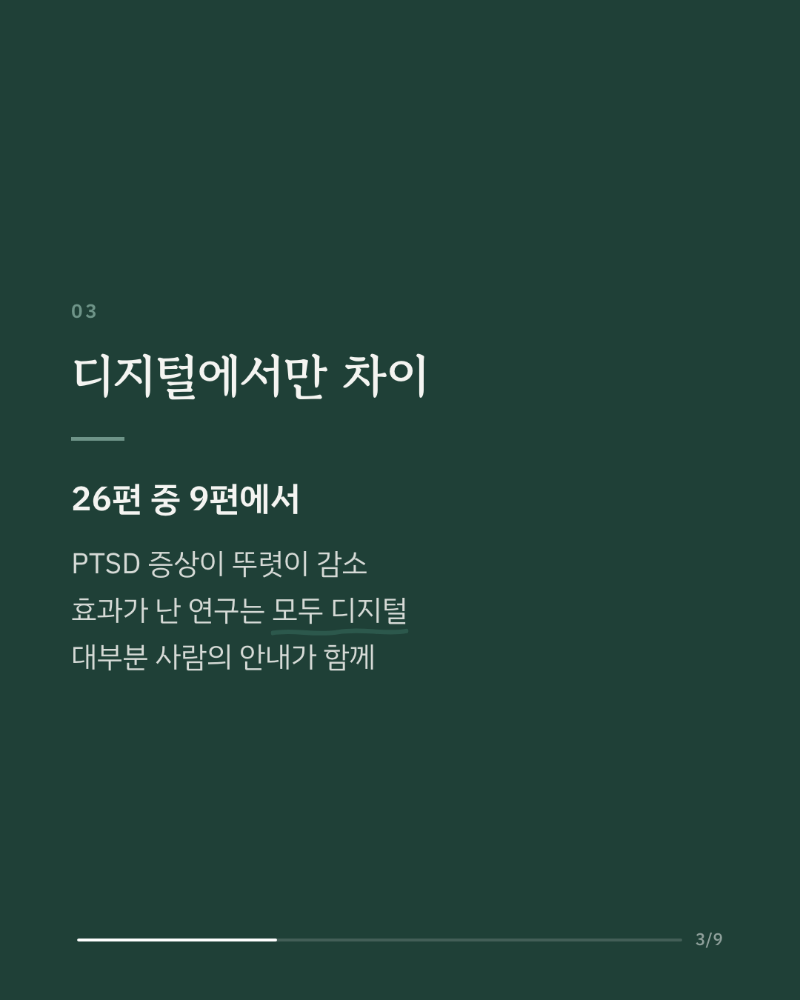
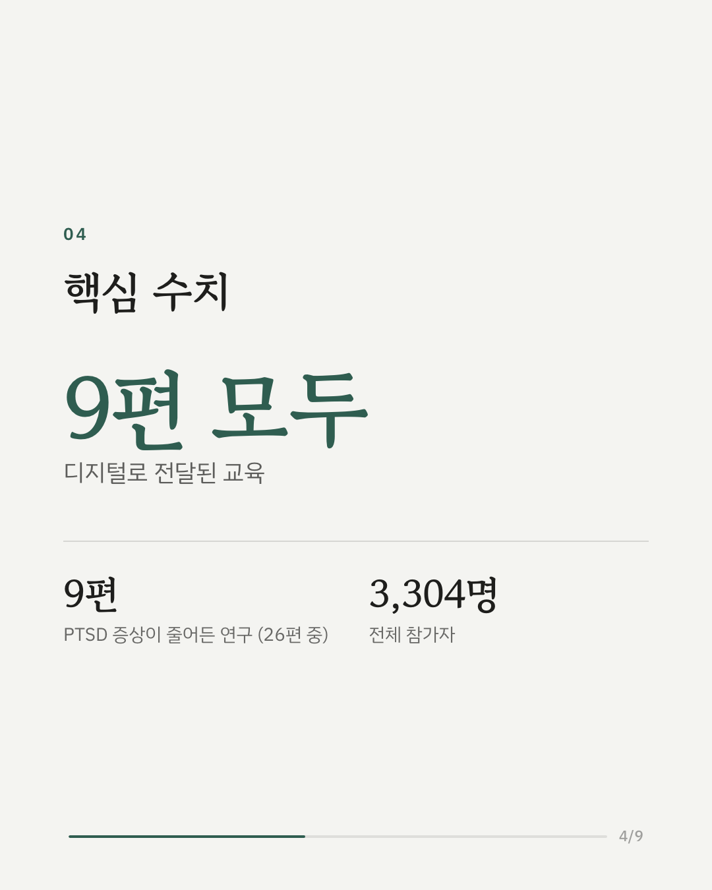
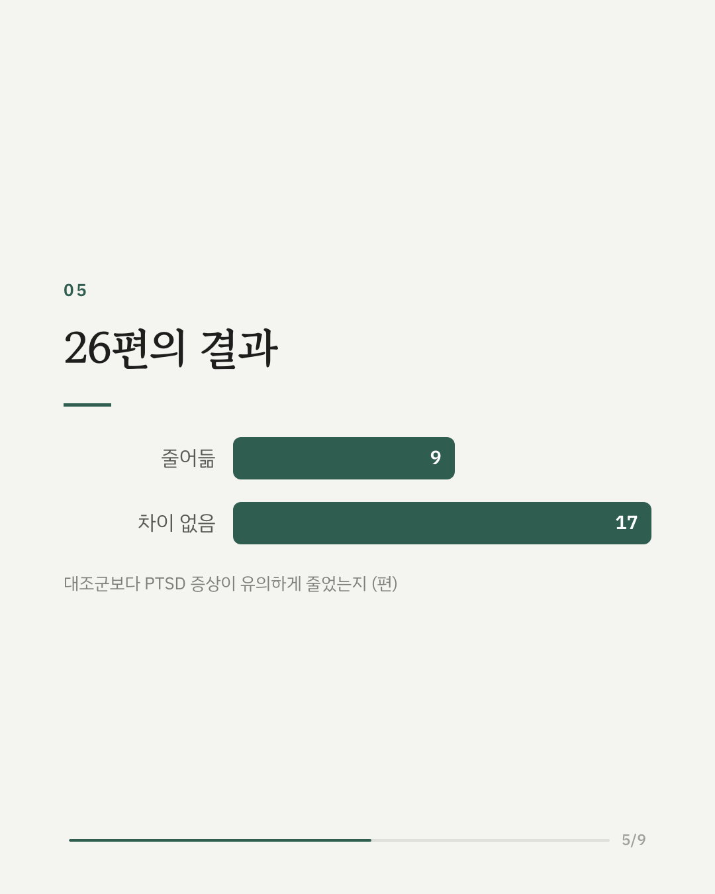
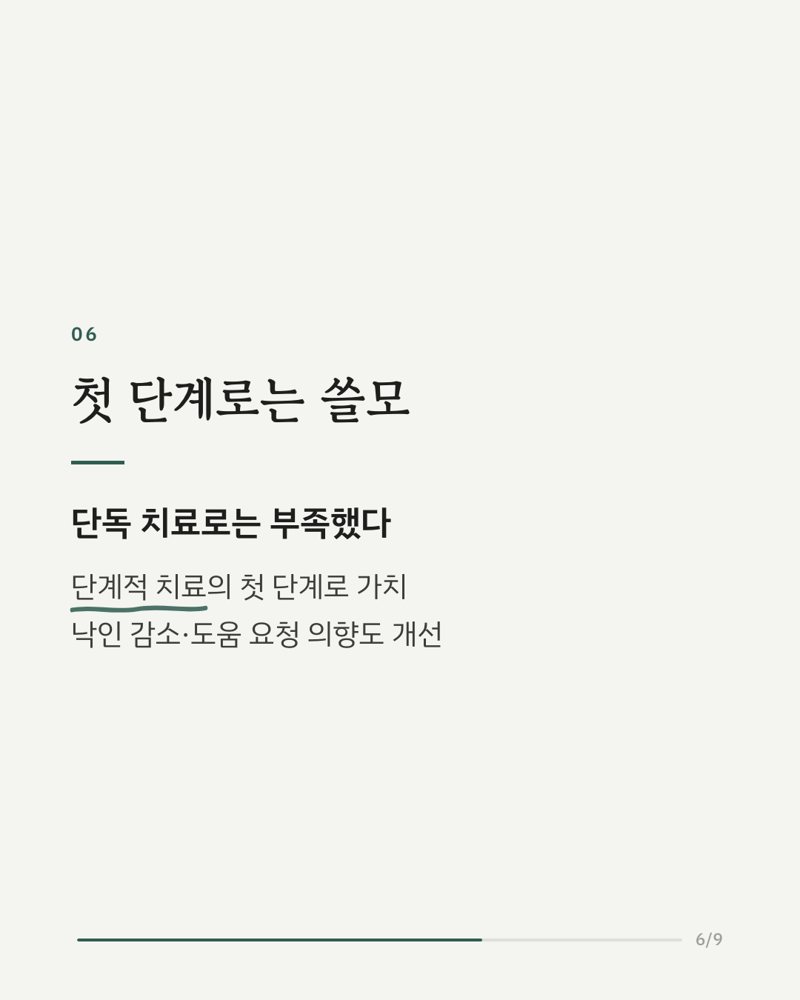
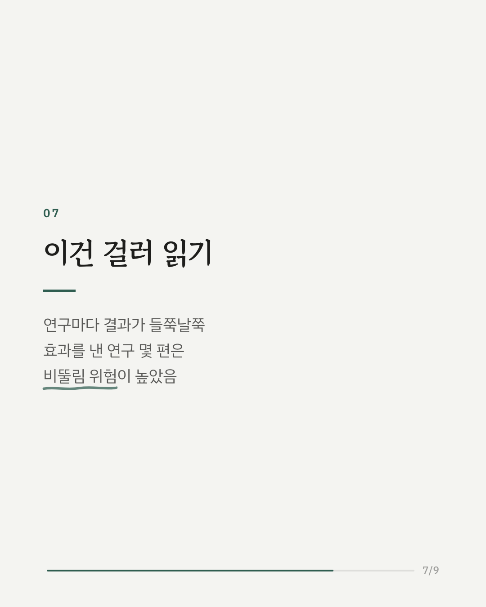
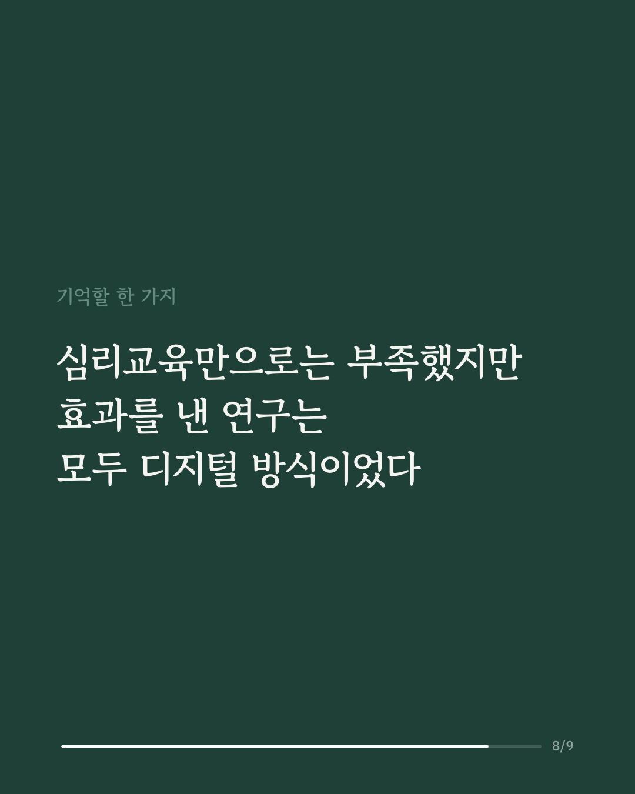
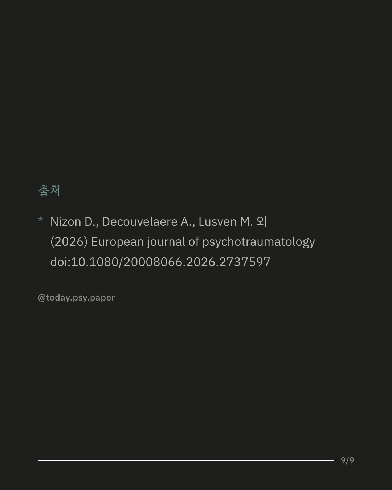

트라우마를 겪은 뒤 생기는 외상 후 스트레스 장애(PTSD)는 흔한 정신질환입니다. 증상과 회복 과정을 알려 주는 심리교육은 비용이 적고 시작하기 쉬워, 치료의 첫 관문으로 자주 쓰입니다. 이 연구는 성인을 대상으로 한 무작위 대조 시험 26편(참가자 3,304명)을 모아 심리교육만으로 PTSD 증상이 줄어드는지 살폈습니다. 26편 중 9편에서 증상이 뚜렷하게 줄었습니다. 이 9편은 모두 앱·온라인 같은 디지털 방식이었고, 대부분 사람이 중간중간 안내를 함께 제공했습니다. 스트레스와 불안이 줄고, 낙인이 줄고, 도움을 요청하려는 마음이 커졌다는 보고도 있었습니다. 연구진은 심리교육만으로 PTSD를 치료하기에는 부족하지만, 단계적 치료의 첫 단계로는 여전히 가치가 있다고 정리했습니다. 다만 효과를 보인 연구 중 몇 편은 설계상 비뚤림 위험이 높아, 결과를 그대로 받아들이기는 어렵습니다. 출처: European Journal of Psychotraumatology (2026), 'Psychoeducation for posttraumatic stress disorder in adults: a systematic review of formats and delivery approaches' DOI: 10.1080/20008066.2026.2737597 #임상심리 #정신건강정보 #심리학연구 #논문리뷰 #외상후스트레스장애 #트라우마 #심리교육 #심리치료
python3 publish.py 42924444